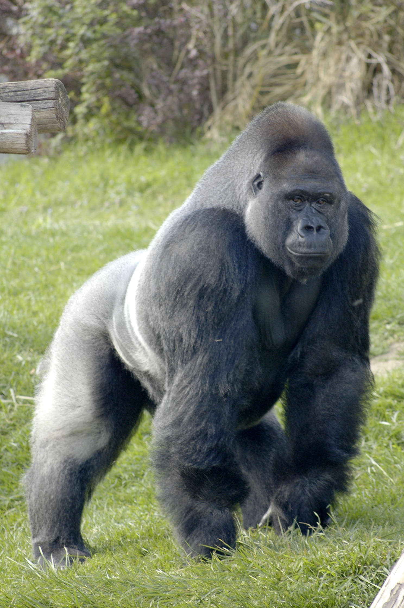

For gorilla info click here
Gorillas are large, primarily herbivorous,
great apes that live in the tropical forests of equatorial Africa.
The genus Gorilla is divided into two species: the eastern gorilla
and the western gorilla, and either four or five subspecies. The
DNA of gorillas is highly similar to that of humans, from 96 to
99% depending on what is included, and they are the next closest
living relatives to humans after the bonobos and chimpanzees.